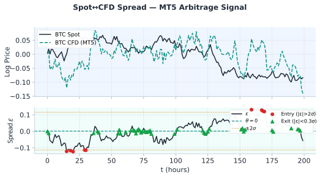
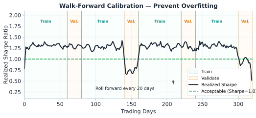

CFD (Contract for Difference) บน MT5 แตกต่างจาก crypto perpetual futures ในหลายมิติ แต่แก่นของ Statistical Arbitrage ยังเหมือนเดิม: ε = log(P_A) − β·log(P_B) mean-reverts กลับค่ากลาง สิ่งที่ต่างคือ แหล่ง alpha เพิ่มเติม ในรูปของ swap overnight
| Crypto Perp (Bybit) | CFD (MT5) | |
|---|---|---|
| Financing mechanism | Funding rate ทุก 8h | Swap overnight ทุกวัน |
| Rate basis | Premium index (demand-driven) | Central bank interest rate differential |
| Rate size | 0.01–0.10% / 8h | 0.001–0.05% / day |
| Rate predictability | เปลี่ยนทุก 8h (volatile) | ค่อนข้างคงที่ (ผูกกับ CB rate) |
| Price transparency | Order book สาธารณะ | Broker sets spread (ไม่ fully transparent) |

Swap overnight คือดอกเบี้ยที่จ่ายหรือรับสำหรับการถือ CFD position ข้ามคืน — broker จะ rollover ตำแหน่งทุกเที่ยงคืนเวลา server (ส่วนใหญ่ 00:00 EET) และคิด/ให้ swap points ตามที่ระบุใน symbol specification
ตัวอย่าง positive swap ที่พบบ่อยในตลาด (ค่าตัวอย่าง — ต้องเช็คกับ broker จริงก่อนเสมอ):
| Instrument | ทิศทาง | เหตุผล | ตัวอย่าง swap/day/lot |
|---|---|---|---|
| XAUUSD (Gold CFD) | Short | Gold yield < USD yield → short receives rate | +$0.5–2.0 |
| USOIL | Short (contango) | Futures curve upward sloping — short receives roll yield | +$1.0–3.0 |
| USDHUF / USDTRY | Short USD | HUF/TRY interest rate สูงกว่า USD มาก | +$5.0–15.0 |
| BTC CFD / ETH CFD | ขึ้นกับ broker | Varies — ต้องเช็ค specification | -$1.0–+$1.0 |
Swap rates เปลี่ยนได้ทุกสัปดาห์ตามนโยบาย broker และ central bank rate cycle — ต้อง check specification ก่อนเปิด position เสมอ อย่าใช้ค่าจากสัปดาห์ก่อนโดยไม่ verify ใหม่
Position: Short 1 lot XAUUSD CFD (100 oz), ราคา = $2,000/oz
Swap specification: Swap Short = −1.20 swap points/day (ค่าลบสำหรับ short = broker จ่ายให้เรา)
Pip value สำหรับ XAUUSD = $1.00 ต่อ pip ต่อ lot (1 pip = $0.01 × 100 oz = $1.00)
Swap per day = 1 lot × 1.20 × $1.00 = $1.20/day
ต่อเดือน (22 trading days) = $1.20 × 22 = $26.40/month per lot
ต่อปี (252 days) = $1.20 × 252 = $302.40 ≈ 0.15% annualized บน notional $200,000 (1 lot × 100 oz × $2,000/oz) หรือ 1.51% บน margin ที่ 10% (margin = $20,000)
นี่คือบทที่สำคัญที่สุดใน ch21 — การไม่อ่าน TOS ก่อน trade อาจทำให้ account ถูก ban และกำไรถูกยึดทั้งหมด อ่านทุกข้อด้านล่างอย่างละเอียด
MT5 default = Netting mode: ไม่สามารถถือ Buy และ Sell ของ symbol เดียวกันพร้อมกันใน account เดียว — ถ้าเปิด Buy แล้วเปิด Sell จะหักล้างกันทันที
หลาย broker มีข้อห้ามใน Terms of Service ครอบคลุมคำต่อไปนี้:
→ อ่าน TOS ของทุก broker ที่จะใช้ก่อนเสมอ โดยเฉพาะหัวข้อ Prohibited Trading Practices
→ ถ้าเจอข้อห้าม → หา broker ที่ไม่มีข้อห้ามนี้ (มีอยู่หลาย broker โดยเฉพาะ ECN/STP broker)
บาง broker กำหนด minimum position hold time (เช่น ≥ 2 นาที หรือ ≥ 1 ชั่วโมง) เพื่อป้องกัน latency arbitrage
→ กระทบ intraday spread arb — ถ้า hold น้อยกว่า minimum จะถูก void profit หรือ ban
→ ไม่กระทบ overnight swing strategy ของ ch21 เพราะเราถือข้ามคืน (หลาย ชม. ถึงหลายวัน)
MT5 CFD execution ช้ากว่า crypto exchange มาก (200ms–2s vs <100ms)
→ Legging risk สูงกว่า — ขา A เข้าแล้วขา B ราคาเปลี่ยนก่อนจะ fill
→ ใช้ limit orders แทน market orders เสมอที่ทำได้ เพื่อลด slippage และ requote
→ เปิดทั้งสองขาภายใน 1–2 วินาทีหากเป็นไปได้
อย่า trade Swap Arb บน broker เดียวกันโดยใช้ hedge account — ผิด TOS ของเกือบทุก broker และอาจถูก account ban พร้อมยึดกำไรทั้งหมด กฎนี้ใช้กับทุก broker ที่มี anti-arbitrage policy ไม่ว่าจะเรียกว่า "hedging account" หรืออะไรก็ตาม — ถ้า 2 ขาอยู่ใน broker เดียวกัน broker มองเห็นทั้งคู่และจะระบุได้ว่าเป็น arbitrage
MT5 เปิดโอกาสให้ trade หลาย asset class ในแพลตฟอร์มเดียว แต่ละ category มี half-life และ friction ต่างกัน ต้องผ่าน Pair Selection Pipeline (ch5 §5.8) ก่อนเสมอ
| Category | Y_t | X_t | Alpha Driver | Half-life ε | Friction (est.) |
|---|---|---|---|---|---|
| Metals | XAUUSD (Gold) | XAGUSD (Silver) | Commodity ratio + backwardation swap | 3–10 วัน | 40–70 bps |
| FX Crosses | EURUSD CFD | GBPUSD CFD | USD leg ร่วม → synthetic EURGBP | 1–5 วัน | 20–40 bps |
| Indices | US500 CFD | NAS100 CFD | US equity sector correlation | 2–7 วัน | 30–60 bps |
| Crypto CFD | BTCUSD CFD | ETHUSD CFD | Crypto market cycle β | 0.5–3 วัน | 60–120 bps |
ข้อดีของใช้ majors แทน cross rate: EURUSD และ GBPUSD มี bid-ask แคบกว่า EURGBP โดยตรงมาก (10–20 bps vs 30–50 bps) → friction ต่ำกว่า → edge ดีกว่า
ใช้ Pair Selection Pipeline จากบทที่ 5 §5.8 กับทุกคู่ก่อนทุกครั้ง — ตรวจ: (1) cointegration test (ADF/KPSS), (2) half-life ε, (3) ρ (correlation), (4) AR(1) coefficient, (5) breakeven σ check ทุกขั้นตอน
การคำนวณ ε ใช้ OLS/TLS β เหมือนกับที่อธิบายใน ch4 ไม่ต้องเปลี่ยน framework แต่ มีสิ่งที่ต่างจาก crypto ที่ต้องระวัง:
Financing spread ใน CFD เปลี่ยนตาม central bank rate cycle:
→ ถ้า Fed ขึ้น/ลดดอกเบี้ย → swap rate เปลี่ยน → ค่ากลาง θ ของ ε drift ได้
→ Walk-Forward Calibration (ch3 §3.9) สำคัญยิ่งกว่าใน crypto — ต้อง re-calibrate บ่อยกว่า
→ อย่าใช้ static θ หรือ static β ที่ fit ครั้งเดียวนาน > 3 เดือนโดยไม่ validate ใหม่
Recommended calibration window สำหรับ MT5 แต่ละ category:
| Strategy type | Train window | Test window | Slide |
|---|---|---|---|
| FX intraday | 30 วัน | 10 วัน | 10 วัน |
| Metals swing | 90 วัน | 30 วัน | 30 วัน |
| Indices | 60 วัน | 20 วัน | 20 วัน |
| Crypto CFD | 45 วัน | 15 วัน | 15 วัน |
β_log = 1.18 (level regression บน log price — ไม่ใช่ β_raw=0.0444 จาก raw price ซึ่ง EA code §21.7 ที่ใช้ log(price) ต้องไม่นำมาใช้), ρ = 0.9745, AR(1) = 0.9602, Half-life = 17h
→ ใช้ Crypto CFD row: Train 45 วัน, Test 15 วัน, Slide ทุก 15 วัน
→ Half-life 17h = overnight swing — เหมาะสำหรับ strategy ที่ถือข้ามคืน
→ Walk-forward re-calibrate β ทุก 15 วัน เพื่อจับ drift ของ crypto market cycle
Friction ของ MT5 CFD ต่างจาก crypto exchange — ต้องเข้าใจ structure ก่อน calculate edge:
| Component | Crypto (Bybit) | MT5 ECN | MT5 Market Maker |
|---|---|---|---|
| Commission | 0.055% + 0.030% (taker) | $3–7/lot (separate) | Embedded in spread |
| Bid-ask spread | 0.002–0.004% | 0.5–2 pips FX; wider metals | 1–3 pips FX; wider metals |
| Maker option | ✅ ลดเหลือ 0.02% | บางครั้ง (limit orders) | ❌ |
| Overnight | สามารถ +/− | Swap (positive เมื่อ harvesting) | Swap |
| Execution speed | <100ms | 200ms–2s | 500ms–3s |
Friction ≈ 50 bps → breakeven σ = 50 / (2.0 − 0.5) = 33 bps
σ_stat empirical ≈ 50–80 bps → net edge = 17–47 bps per half-cycle ✅
Friction ≈ 80 bps → breakeven σ = 80 / (2.0 − 0.5) = 53 bps
σ_stat ≈ 150–200 bps → net edge = 97–147 bps ✅ (แต่ fat tail → ต้องใช้ robust z-score)
Friction ≈ 25 bps → breakeven σ = 25 / (2.0 − 0.5) = 17 bps
σ_stat ≈ 30–50 bps → net edge = 13–33 bps ✅
การ implement Swap Arb บน MT5 ต้องใช้ 2 broker แยกกัน โดย Signal Engine เป็นตัวกลางคำนวณ ε และส่ง order ไปทั้งสองฝั่ง:

การ synchronize ข้อมูลจาก 2 broker ต้องทำอย่างระมัดระวัง:
Setup: Broker A — Gold spot บน exchange | Broker B — Short XAUUSD CFD บน MT5
| พารามิเตอร์ | ค่า |
|---|---|
| Swap received (short CFD) | $1.20/day per lot (rate carry / contango — Gold yield < USD yield) |
| ε Half-life | 5 วัน |
| σ_stat | 0.6% (60 bps) |
| Total friction | 50 bps |
| Breakeven σ | 50 / 1.5 = 33 bps ✅ |
Net alpha per trade: (σ_stat − BE_σ) × (z_entry − z_exit) = (0.60% − 0.33%) × 1.5 = 40 bps จาก mean reversion
+ swap income: $1.20/day × 5 วัน (avg hold) = $6.00 per lot per trade
→ รวม alpha ≈ 0.54% + swap เสริม — เป็น compound edge ที่น่าสนใจ
Cointegration stats: β_log = 1.18 (ไม่ใช่ β_raw=0.0444 — ดูคำเตือนเรื่อง log-price vs raw-price ใน ch4 §4.6.1), ρ = 0.9745, AR(1) = 0.9602, Half-life = 17h
| พารามิเตอร์ | ค่า |
|---|---|
| Pair Selection Pipeline (ch5 §5.8) | ✅ ผ่าน (swing only, robust z-score) |
| MT5 friction estimate | ~80 bps |
| Breakeven σ | 80 / 1.5 = 53 bps |
| σ_stat empirical | ≈ 170 bps (200 bps >> 53 bps ✅) |
Strategy: overnight swing, z_entry = 2.0, ใช้ MAD-based robust z-score เพราะ fat tail
Walk-forward: calibrate ทุก 15 วัน (Crypto CFD row จากตาราง §21.5)
β = 1.15 — ไม่ใช่ 1.0 เพราะมาจาก OLS regression บน log prices ที่สะท้อน relative volatility/co-movement ของสองคู่เงิน (ไม่เกี่ยวกับ pip value — pip value ต่อ lot ของ EURUSD/GBPUSD เท่ากันเพราะ quote currency เป็น USD ทั้งคู่)
| พารามิเตอร์ | ค่า |
|---|---|
| USD Normalization | Long $100k EURUSD + Short $115k GBPUSD (β-adjusted) |
| Net exposure | Long ~€74k / Short ~£55k / Net USD ≈ +$15k (residual ~13%) |
| ε interpretation | ≈ synthetic EURGBP; ρ = 0.96; ADF p ≈ 0.02 ✅ |
| Friction estimate | 25 bps |
| Breakeven σ | 25 / 1.5 = 17 bps |
| σ_stat typical | 35–45 bps >> 17 bps ✅ |
ข้อดี: EURUSD+GBPUSD มี spread แคบกว่า EURGBP โดยตรง → friction ต่ำที่สุดในบรรดา 3 ตัวอย่าง
ข้อระวัง: normalize notional ตาม β (β-weighted) hedge ตัว risk factor ได้ตรง แต่จะเหลือ residual USD exposure (~13% ในตัวอย่างนี้) — ถ้าต้องการ USD-neutral เต็มรูปให้ใช้ equal USD notional แทน (แต่จะไม่ตรงกับ β เป๊ะ) เลือก trade-off ตามเป้าหมาย
MT5 swap rates change quarterly — re-check swap cost before every trade week. CFD bid-ask is typically 0.1–0.3 bps wider than spot; factor this into net edge. Broker rules on hedging (simultaneously long and short same instrument) vary — some brokers require separate accounts. Walk-forward re-calibrate κ, θ, σ every 20 trading days using 60-day training window; alert if out-of-sample Sharpe drops below 0.5.
CFD spread vs spot is not a true statistical relationship — the broker controls the CFD price and can widen spreads unilaterally. During high-volatility events, CFD liquidity disappears faster than spot. Also: broker-specific risks (margin call, stop-out level) interact with the strategy's leverage; a 1% adverse move in spot can trigger margin call on CFD leg before the spread reverts.
Short 2 lots XAUUSD CFD
Swap specification: Swap Short = −1.5 swap points/day (ค่าลบ = รับ swap)
สำหรับ XAUUSD: 1 lot = 100 oz, swap calculation: lots × swap_points × pip_value
Pip value สำหรับ XAUUSD = $1.00 ต่อ pip ต่อ lot (1 pip = $0.01 × 100 oz = $1.00)
ถาม: swap income ต่อวันเท่าไหร่? ต่อเดือน (22 trading days)?
Swap per day per lot: 1.5 swap points × $1.00/pip = $1.50 per lot per day
Swap per day (2 lots): 2 × $1.50 = $3.00/day
ต่อเดือน (22 trading days): $3.00 × 22 = $66.00/month
หมายเหตุ: วันพุธมักถูกคิด triple swap (3x) เพื่อครอบคลุม weekend rollover → ต้องตรวจว่า broker ของคุณทำแบบนี้หรือไม่
Broker X มีข้อกำหนดใน TOS ว่า: "Minimum position hold time = 5 นาที. Positions closed before 5 minutes will have profits voided."
ถาม: กลยุทธ์ไหนของ ch21 ยังทำได้กับ Broker X? กลยุทธ์ไหนทำไม่ได้?
✅ ทำได้: Overnight Swing Strategy
ถือ position ข้ามคืน (หลายชั่วโมง ถึงหลายวัน) → ไม่มีปัญหา minimum hold time 5 นาที
เก็บ swap overnight ได้ตามปกติ
❌ ทำไม่ได้: Intraday Fast Mean Reversion
ถ้า z-score กลับเร็ว (ภายใน 2–3 นาที) และ exit ก่อน 5 นาที → profits ถูก void
→ ต้องตั้ง exit timeout ≥ 5 นาทีจาก entry ซึ่งเพิ่ม legging risk และ adverse move risk
สรุป: บนประเภท strategy ที่เน้น overnight swing ตาม ch21 → Broker X ใช้ได้ แต่ถ้าต้องการ intraday ต้องหา broker อื่น
BTC/ETH CFD บน MT5:
σ_stat = 2.0%, total friction = 80 bps, z_entry = 2.0, z_exit = 0.5
ถาม: (1) breakeven σ = เท่าไหร่? (2) trade ได้ไหม? (3) net edge ต่อ trade คือกี่ bps?
(1) Breakeven σ:
breakeven σ = total_friction / (z_entry − z_exit) = 80 / (2.0 − 0.5) = 80 / 1.5 = 53.3 bps = 0.533%
(2) Trade ได้ไหม:
σ_stat = 2.0% = 200 bps ≫ breakeven σ = 53.3 bps → ✅ มี edge ชัดเจน
(3) Net edge ต่อ trade:
net edge = (σ_stat − breakeven_σ) × (z_entry − z_exit)
= (200 − 53.3) × 1.5 = 146.7 × 1.5 ≈ 220 bps ≈ 2.2% per trade
หมายเหตุ: fat tail ของ crypto → ใช้ MAD-based robust z-score และ stop-loss ≥ 3σ เสมอ
Ch.21 Spot↔CFD Swap Arbitrage บน MT5 | ← Ch.20 | → Ch.22